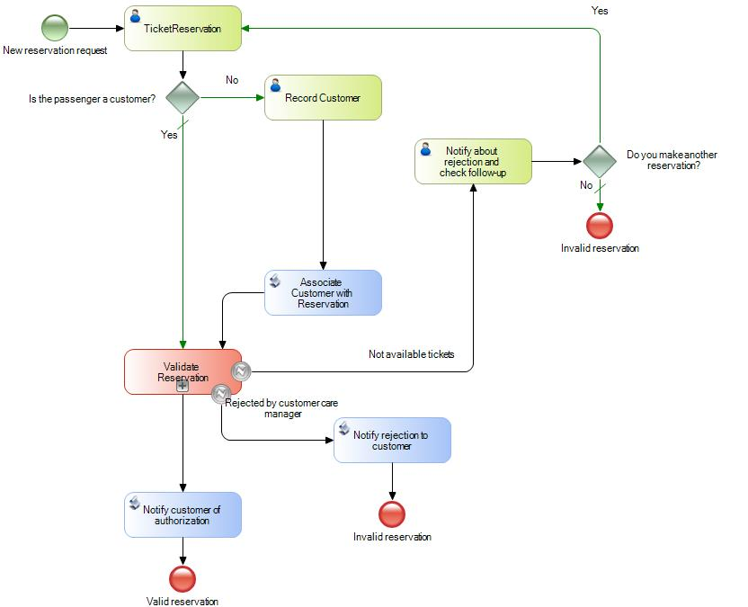

Once you have modeled the Business Process you should convert the business process diagram in a functional application.
The way to accomplish that is by associating GeneXus objects to the Business Process Diagram elements. This stage is known as Automation and is part of the BPM Cycle.
Assume that you have a BPD from a ticket reservation process, in a Travel Agency.

The first step in the process is to enter the reservation for the ticket. To accomplish this task, you should use an object that allows entering the reservation information using a web form and store the data in a database.
This action is usually accomplished by a GeneXus Transaction object.